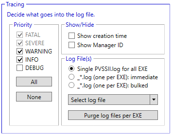

Run the Log Report
- Select Start > All Programs > [Company] > Desigo CC > Tools > Trace Viewer.
- In the Settings tab, Priorities section, check the WARNING and INFO boxes.
- NOTE: Checking DEBUG will affect Trace Log Viewer performance. Selecting DEBUG should be done selectively (for example, upon recommendation from Field Support).

- Unless you have a custom log file that you want to use, accept the default scan file (log file), PVSS_II.log.
- In the Modules section, select the components you want to troubleshot.
- Click the Traces – PVSS_II.log tab.
- Depending on your module selections, you may see traces immediately in the Trace Viewer. For other modules, such as Schedules, you may need to select the schedule object in System Browser that is producing errors before Trace Viewer starts logging data about it.
- Navigate to the location of the log file—[Installation Drive]:\[Installation Folder]\[Project Name]\log\PVSS_II.log.
- Copy the file, and then send it to Technical Support so that they can help you troubleshoot the problems.